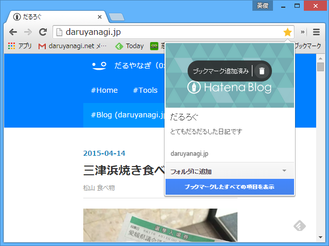
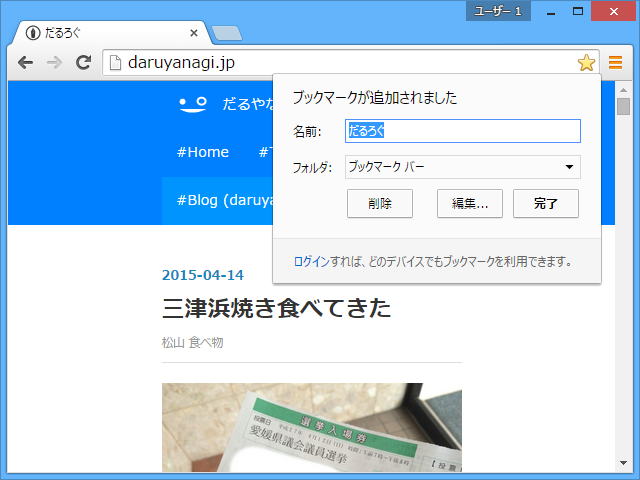
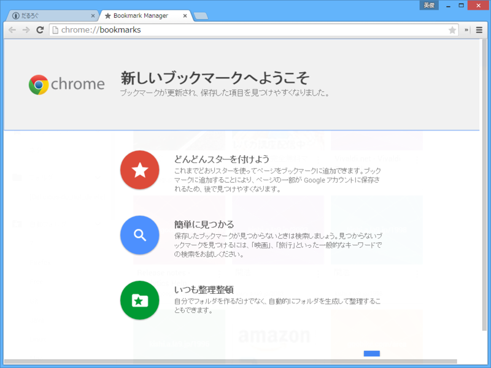
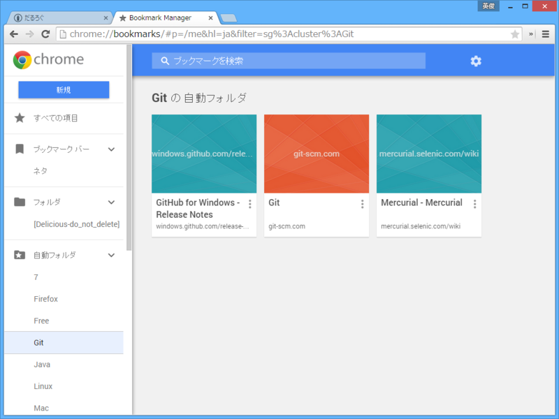
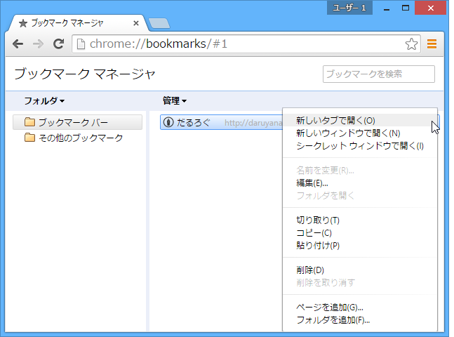

Google Chrome の新しいブックマークマネージャー
公開日：

「Google Chrome 42」で確認。［ブックマーク］ボタンが［スター］ボタンになってた。ブックマークにカバーイメージや概要なんかも指定できるようになっているのかな。ちょっとリッチになった感じ。

ちなみに、アカウントでログインしていない場合は、従来の［ブックマーク］ボタンが表示されるみたい。よく注意してないと、変わったのを見過ごしてしまいそう。
追記
アカウントでログインしていない場合でも chrome://bookmarks にアクセスすると有効化されたかも？ よくわかんないな。

試しに chrome://bookmarks を開くと、新しいブックマークマネージャーの案内が表示される。

新しい chrome://bookmarks では、ブックマークがタイル表示になっている（リスト表示にすることも可能）。“自動フォルダ”にブックマークが勝手にカテゴライズされていくのが便利くさい。

ちなみに、古いヤツ。こちらのほうが味わい深い（？）けど、新しいのに比べるとだいぶ見劣りするかも。まぁ、それでも「古い方じゃないとイヤだ！ 新しいのはクソ！」っていうヒトがある程度いそうな気がする。自分はブックマークツールバーを使う派なので、割とどうでもいいかなって感じ。“自動フォルダ”が期待通りに賢ければいいんだけど（今のところはいい感じ）。